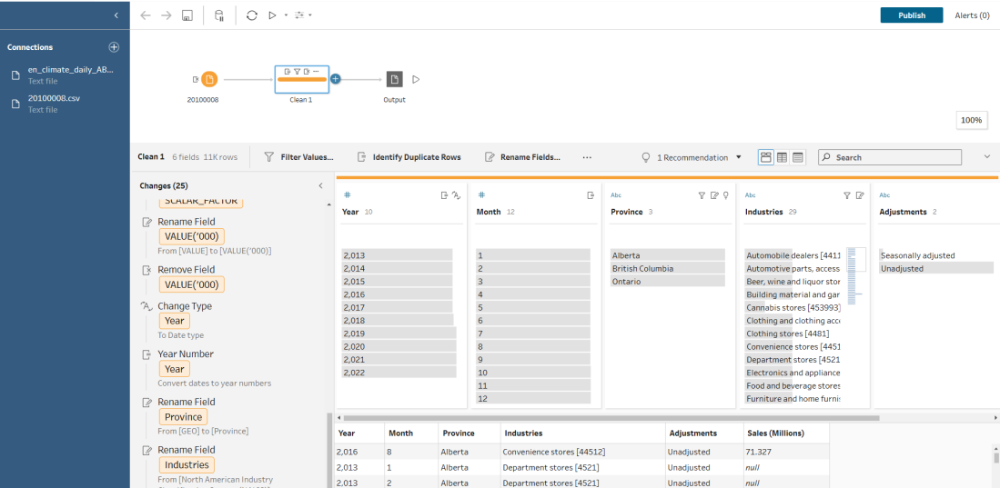
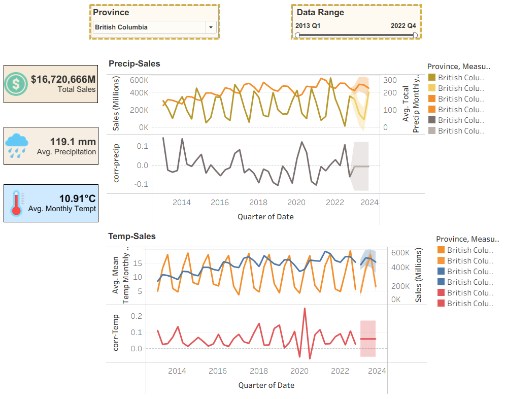
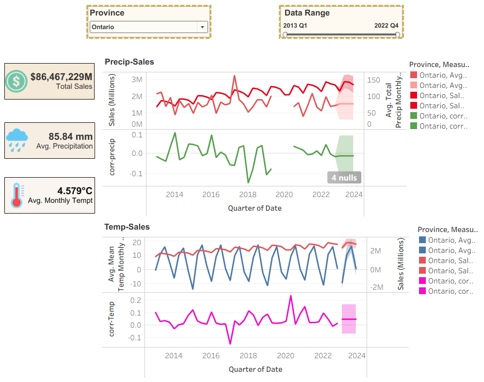
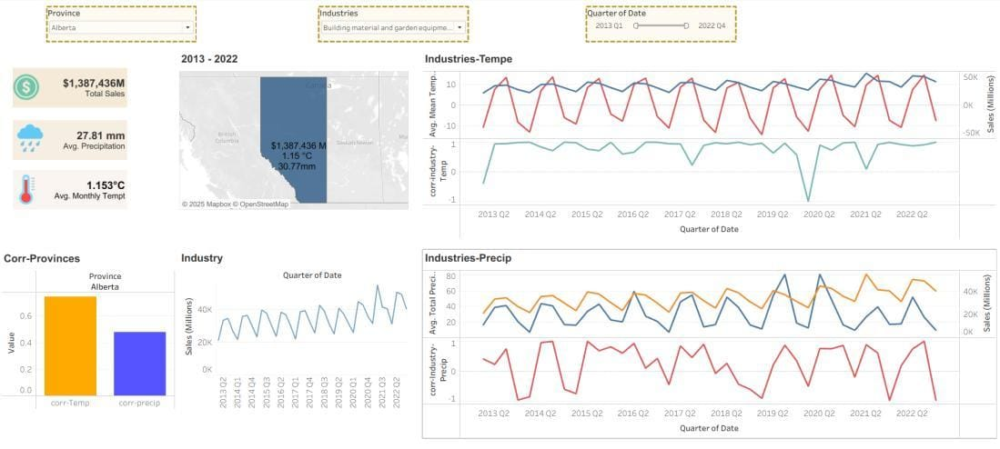

Does Weather Drive Retail Sales? Climate–Sales Correlation across AB, BC & ON (2013–2022)
A decade of data on how temperature and precipitation relate to retail sales — and what it means for forecasting.

Retailers plan inventory, staffing, and promotions months ahead — so it's worth asking how much the weather actually moves sales. In this project I analysed a decade of monthly data (2013–2022) to measure how temperature and precipitation relate to retail sales across Alberta, British Columbia, and Ontario, and what that means for forecasting.
Objective & approach
The goal was to quantify how climate factors influence retail sales, and to translate that into inventory, marketing, and staffing guidance. I combined statistical correlation analysis with industry-level segmentation, supported by Tableau dashboards so both technical and non-technical stakeholders could read the story quickly.
Data & method
- Sources: Statistics Canada retail trade tables and Environment Canada historical climate records.
- Preparation: consolidated and harmonised climate datasets, standardised date formats, and organised retailers into 11 industry categories for comparable segmentation.
- Smoothing: computed monthly averages to reduce short-term noise and surface underlying trends.
- Integrity: retained the small share of null values deliberately (negligible impact), and integrated everything by province, year, and month for reproducible analysis.
- Tooling: Tableau Prep flows for cleaning, Tableau for correlation and seasonality dashboards.

Key findings
1. Precipitation barely matters. Across all three provinces, precipitation showed negligible correlation with overall sales — fluctuating near zero historically and staying insignificant in forecasts (Ontario even leaned slightly negative). For most planning, it can be excluded from predictive models.
2. Temperature is a small but consistent driver. Warmer quarters aligned with slightly higher demand in every province. The effect was most pronounced in Ontario, moderate in Alberta and BC, and expected to persist through 2023 — useful as a secondary seasonal adjustment, not a primary signal.
3. Seasonality and promotions dominate. Recurring Q2–Q3 peaks and Q4 holiday lifts drove the bulk of variation, with climate playing a supporting role.
4. Sensitivity varies a lot by industry. A few examples from the industry-level analysis:
- High temperature-sensitivity: Building Materials & Garden Equipment, Gasoline Stations, and Motor Vehicle & Parts Dealers (e.g. BC Gasoline ≈ +0.38, Building Materials ≈ +0.34 with temperature).
- Precipitation-positive niches: Electronics & Appliances (BC ≈ +0.38), Sporting Goods, and Health & Personal Care (≈ +0.18–0.22) — wetter periods tracked higher demand. Ontario Building Materials stood out at ≈ +0.60 with precipitation.
- Neutral: Food & Beverage and Clothing hovered near zero.
- Negative/negligible to temperature: Electronics & Appliances (≈ –0.28) and Health & Personal Care (≈ –0.22).
A closer look by province
Scale and climate differ across the three provinces, but the signal is consistent. British Columbia is the mildest and wettest (avg ~10.9°C, ~119 mm precipitation), Alberta the coldest and driest (~1.2°C, ~28 mm), and Ontario sits in between (~4.6°C, ~86 mm) while being by far the largest retail market. Despite these differences, precipitation tracks near zero with sales in every province, while temperature shows a small positive correlation — strongest in Ontario. (Alberta's dashboard is shown at the top of this post.)



What I'd recommend
- Incorporate temperature as a secondary regressor for climate-sensitive sectors; exclude precipitation from general models given its negligible predictive value.
- Anchor planning to established seasonal peaks — e.g. Ontario ramping inventory in Q2–Q3, Alberta focusing on Building Materials and Gasoline Stations.
- Keep contingency plans for extreme-weather demand spikes (heat waves), even though climate isn't a dominant driver overall.
Full dataset, Tableau workbook, Tableau Prep flows, and the executive briefing report are on GitHub: Climate-and-Sales-Correlation.